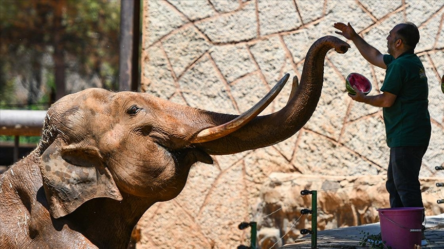

Gaziantep Hayvanat Bahçesi’nde düzenlenen Hayvan Besleme Gösterileri, ziyaretçilere hayvanların doğal beslenme süreçlerini yakından gözlemleme ve öğrenme fırsatı sunan en ilgi çekici etkinliklerden biridir. Rehberler eşliğinde gerçekleştirilen bu gösterilerde zürafalar, zebralar, maymunlar, kuşlar ve akvaryum canlıları gibi farklı türler beslenirken çocuklar onların davranışlarını doğrudan izleyebilir. Öğrenciler, hayvanların hangi besinlerle beslendiğini, beslenme alışkanlıklarının ekolojik önemini ve doğadaki rollerini öğrenirken aynı zamanda eğlenceli bir deneyim yaşar. Program kapsamında rehberler, hayvanların yaşam döngüsü ve korunma gerekliliği hakkında bilgi verir; çocuklara yönelik interaktif sorular ve küçük oyunlarla öğrenme süreci desteklenir. Hayvan Besleme Gösterileri, hem eğitici hem de keyifli bir etkinlik olarak doğa sevgisini pekiştirir, çevre bilincini artırır ve Gaziantep Hayvanat Bahçesi ziyaretini unutulmaz hale getirir.